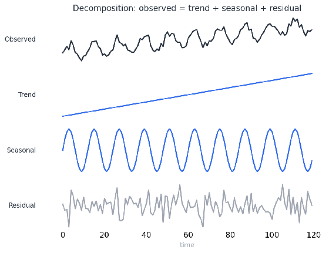
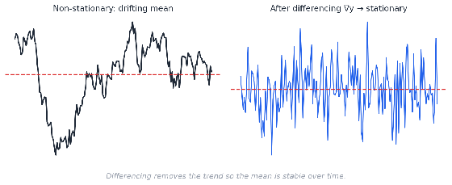
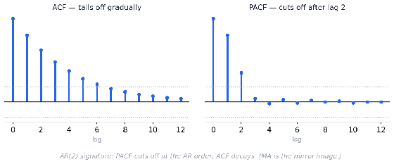
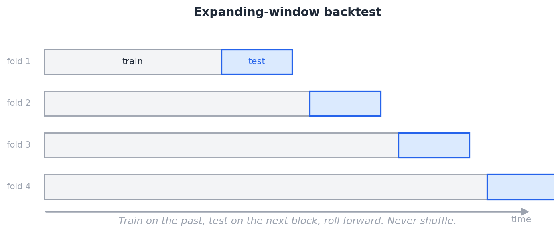

Time Series Stationarity
Time-series forecasting — the one corner of ML where the i.i.d. assumption is dead on arrival: order is the signal, and the past leaks into the future.
#Why time series is different
In standard supervised learning the examples are exchangeable — shuffle the rows and nothing changes. A time series is the opposite: each observation is indexed by time, and order is the signal. Observations are autocorrelated ( depends on its own past), so you can never shuffle or do random train/test splits — doing so trains on the future to predict the past, the most fatal leak in forecasting. And the process itself often changes over time, so "the distribution" is moving. The mindset: a forecast is a conditional expectation .
#The four components of a series
The classical lens decomposes a series into four parts; most models target one explicitly.

Additive decomposition: the observed series is the sum of trend, seasonal, and residual parts.
| Component | What it is | Example |
|---|---|---|
| Trend () | Long-run direction | A product's user base growing over years |
| Seasonality () | Fixed, known-period cycle | Retail spiking every December; traffic by hour |
| Cyclical () | Long swings, no fixed period | Business cycles — harder to model |
| Residual () | What's left after structure | Irregular, ideally unpredictable |
The distinction interviewers like: seasonality has a fixed period (12 months, 7 days) while a cycle does not — that's why seasonality is easy to encode and cycles are not.
#Additive vs multiplicative
How the components combine is a modeling choice. The additive model assumes they add:
Use it when the seasonal swing is a roughly constant size regardless of level. The multiplicative model assumes they multiply:
Use it when the swing scales with the level (December is always +30%). A key trick: logs turn multiplicative into additive, since — which is why log-transforming is the standard first move when variance grows with the level.
#Stationarity
Most classical models assume the series is stationary: statistical properties don't change over time. Weak (covariance) stationarity requires a constant mean, constant variance, and an autocovariance that depends only on the lag , not absolute time. A stationary series has stable structure, so a fixed set of coefficients can capture it.

Differencing turns a trending (non-stationary) series into one with a stable mean.
The usual fix is differencing — model the change, — which removes a linear trend; seasonal differencing removes a season of length . The number of differences needed is the in ARIMA. Confirm with a unit-root test (Augmented Dickey–Fuller), whose null is "non-stationary"; a small p-value means you can treat it as stationary. Use the minimum — over-differencing injects artificial autocorrelation.
#ACF and PACF — reading the order of a model
Two plots tell you which classical model to use. The ACF at lag is the correlation between and , including indirect effects through intermediate lags. The PACF at lag is the same correlation after removing all shorter lags — the direct effect only.

AR(2) signature: the PACF cuts off at the AR order while the ACF decays. MA is the mirror image.
| Plot pattern | Implies |
|---|---|
| PACF cuts off after lag ; ACF tails off | AR() — read from the PACF |
| ACF cuts off after lag ; PACF tails off | MA() — read from the ACF |
| Both tail off gradually | ARMA() — pick via AIC/BIC |
#Classical models: the ARIMA family
ARIMA is built from two atoms. An autoregressive AR() model says today is a linear function of its own recent past plus noise:
A moving-average MA() model says today is a function of recent shocks (past forecast errors):
Combine them for ARMA(); apply it to a series differenced times and you get ARIMA() — difference until stationary, then explain it with autoregressive and moving-average terms. SARIMA adds a seasonal set of terms at lag ; ARIMAX/SARIMAX add exogenous regressors (promotions, holidays, price). Orders come from ACF/PACF plus minimizing AIC/BIC; auto_arima automates the search.
#Exponential smoothing (ETS)
The other classical family forecasts with a weighted average of past observations whose weights decay exponentially — recent data matters most. Simple Exponential Smoothing (SES) tracks just the level:
sets how fast old data is forgotten. SES has no trend or seasonality, so it forecasts a flat line. Holt adds a trend equation (sloped forecast); Holt–Winters adds a seasonal one. Modern libraries frame these as the ETS (Error, Trend, Seasonal) state-space family with likelihood fitting and prediction intervals. Useful fact: SES ARIMA(0,1,1) and Holt ARIMA(0,2,2) — two languages for an overlapping set of processes.
| Model | Captures | Forecast shape |
|---|---|---|
| SES | Level only | Flat |
| Holt | Level + trend | Sloped line |
| Holt–Winters | Level + trend + seasonality | Sloped line with repeating season |
#Modern / ML approaches
With many related series, long histories, rich covariates, or nonlinearities, ML methods take over.
| Approach | Idea | Shines when |
|---|---|---|
| Lags + gradient boosting | Engineer lag/rolling/calendar features, fit XGBoost/LightGBM | Tabular forecasting with strong covariates |
| Prophet | Trend + Fourier seasonality + holidays, fit Bayesian | Business series, holidays, gaps; interpretable |
| DeepAR | Autoregressive RNN across many series, outputs a distribution | Thousands of related series; needs uncertainty |
| N-BEATS / N-HiTS | Deep fully-connected basis expansion, no recurrence | Strong pure-DL univariate accuracy |
| Temporal Fusion Transformer | Attention over mixed covariates; quantiles | Multi-horizon with mixed covariate types |
Two ideas matter more than any architecture. The shift from local models (one ARIMA per series) to global models (one network across all series) lets a sparse series borrow strength from similar ones — a main reason global models (e.g. LightGBM in M5, the ES-RNN hybrid in M4) won recent M-competitions. And probabilistic forecasting — outputting quantiles or a full distribution — matters because inventory and staffing decisions live in the tails. Note that well-tuned classical models and gradient boosting remain hard to beat on a single short series; deep learning earns its keep at scale.
#Validation done right
You cannot use random K-fold — it leaks the future. The correct procedure respects time: train up to time , forecast the next steps, score, then roll the cutoff forward and repeat.

Time-series cross-validation: train on the past, test on the next block, roll forward.
An expanding window keeps all history; a sliding window keeps a fixed recent window (better under drift). Three details separate a correct backtest from a broken one: forecast at the same horizon you care about in production; insert a gap if features look ahead; and build every feature from information available at prediction time. Always compare against a naive baseline ("tomorrow = today," "this December = last December") — a model that can't beat the last value isn't worth shipping.
#Forecasting metrics
| Metric | Idea | Watch out for |
|---|---|---|
| MAE | Robust; same units; linear in error | |
| RMSE | Penalizes big misses; outlier-sensitive | |
| MAPE | Explodes near zero; asymmetric | |
| MASE | Cleanest: beats naive; scale-free | |
| WAPE | Volume-weighted; popular in retail | |
| Pinball loss | asymmetric per-quantile loss | For probabilistic forecasts; pair with coverage |
Choose by the decision: RMSE when big misses are costly, MAE/WAPE when cost is linear, MASE for scale-free comparison across series, and pinball loss + coverage for distributions. Avoid MAPE for series that approach zero.
#One-page summary
| Topic | The one thing to remember |
|---|---|
| Why it's different | Order is the signal; data is autocorrelated; never shuffle or random-split. |
| Components | Trend + seasonality (fixed period) + cycle (no fixed period) + noise (in practice the cycle is folded into trend or residual). |
| Additive vs multiplicative | Constant swing → additive; swing scales with level → multiplicative (log makes it additive). |
| Stationarity | Constant mean/variance/autocovariance. Difference to remove trend; ADF to confirm; minimum . |
| ACF / PACF | PACF cuts at → AR(); ACF cuts at → MA(); both tail → ARMA. |
| ARIMA family | AR = past values; MA = past errors; I = differencing. SARIMA adds seasonality; X adds covariates. |
| Exponential smoothing | Exponentially decaying weights. SES (level) → Holt (+trend) → Holt–Winters (+season). |
| Modern ML | Lags + boosting; Prophet; DeepAR/TFT/N-BEATS. Global > local at scale; forecast distributions. |
| Validation | Rolling/expanding backtest at the production horizon; beat a naive baseline. |
| Metrics | RMSE (big misses), MAE/WAPE (linear), MASE (scale-free), pinball+coverage (probabilistic). Avoid MAPE near zero. |